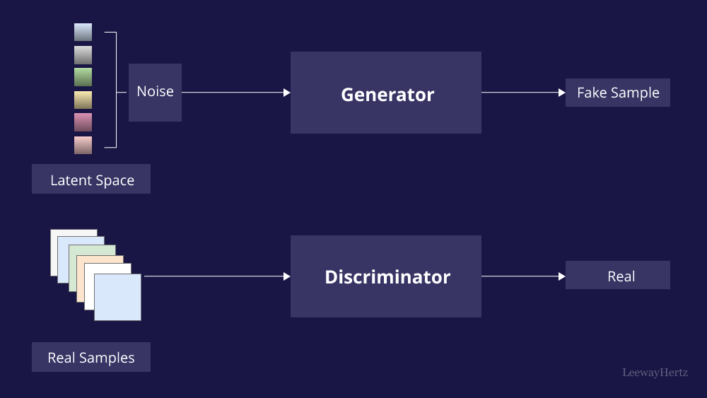

Generative Adversarial Networks (GANs): Creating Artificial Data

Introduction
Generative Adversarial Networks (GANs) are deep learning models that generate realistic synthetic data. From generating images to creating deepfake videos, GANs have revolutionized AI applications.
How GANs Work
GANs consist of two neural networks: the generator and the discriminator. They compete in an adversarial process:
- Generator: Creates synthetic data, trying to fool the discriminator.
- Discriminator: Distinguishes real from fake data and improves its accuracy over time.
- Adversarial Training: Both networks continuously improve, leading to highly realistic outputs.
Applications of GANs
- Image Generation: Creating realistic faces and artworks.
- Deepfake Technology: Altering videos and voices with AI.
- Medical Imaging: Generating high-quality medical scans.
- Data Augmentation: Expanding datasets for training AI models.
- AI-Generated Music & Voice: Synthesizing realistic speech and music compositions.
Challenges and Ethical Concerns
- Training Instability: GANs require fine-tuning to avoid mode collapse.
- Deepfake Misinformation: Risk of spreading false information.
- Data Privacy Issues: Ethical concerns in generating synthetic personal data.
- Bias in AI: GANs may learn and reproduce biases from training data.
Conclusion
GANs have transformed artificial intelligence by enabling machines to generate realistic synthetic data. While their potential is vast, careful consideration of ethical implications is essential as the technology advances.